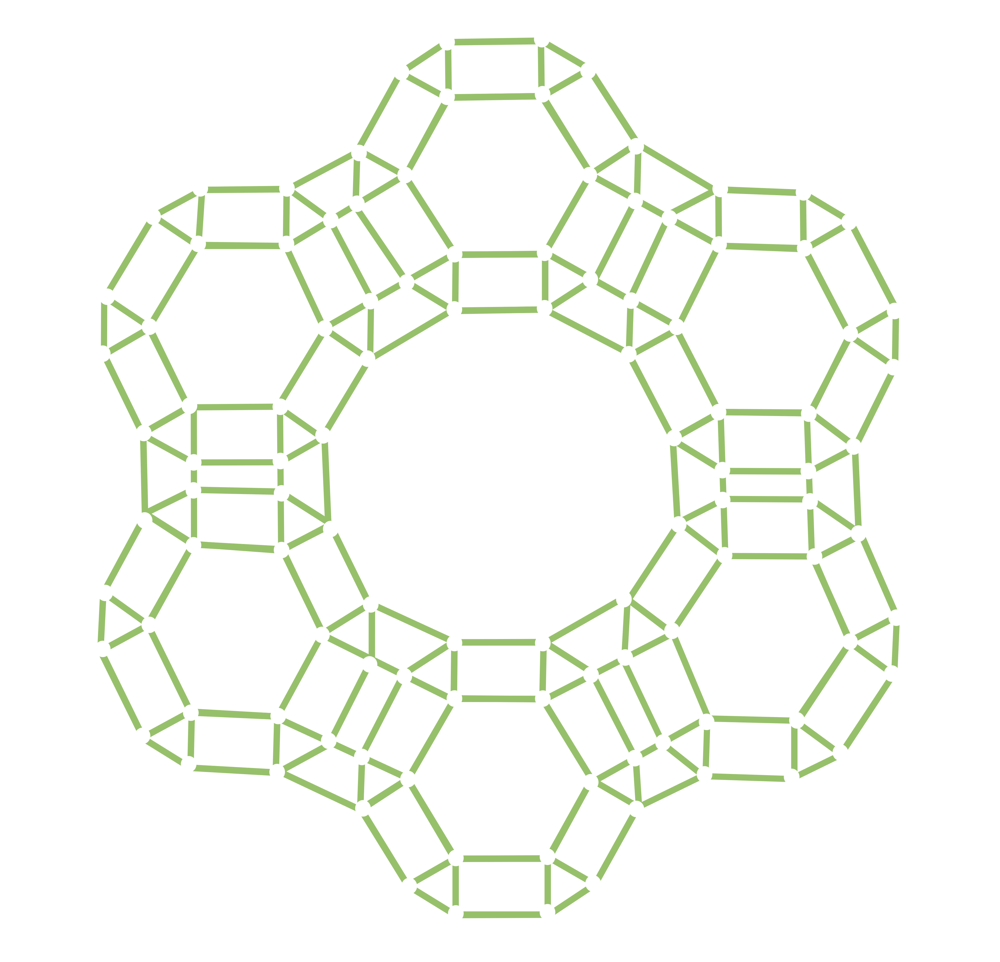

Enhanced Dynamic Activation (EDA) is an innovative technology based on biophysics, chemistry, and natural science.
Under special dynamic conditions, the EDA approach alters particle size, energy status, and ion exchange capacity of our products. Subjecting each exit material to rigorous field study validated increase in solubility, amorphous to crystalline ratio, and difference in biological activity.
The enhanced nature of our dynamically activated products is manifest in higher quality and nutrient uptake in the soil, accelerated plant development and protection in the face of environmental stress, and optimized immune system function and well-being of animals.
Enhanced Dynamic Activation (EDA) is an innovative technology based on biophysics, chemistry, and natural science.
Under special dynamic conditions, the EDA approach alters particle size, energy status, and ion exchange capacity of our products. Subjecting each exit material to rigorous field study validated increase in solubility, amorphous to crystalline ratio, and difference in biological activity.
The enhanced nature of our dynamically activated products is manifest in higher quality and nutrient uptake in the soil, accelerated plant development and protection in the face of environmental stress, and optimized immune system function and well-being of animals.
BENEFITS
Increased Reactivity
The degree of interaction a medium has with the outside environment is contingent upon its particle size and specific surface area. In general, increased specific surface usual for microbial particles is synonymous with higher reactivity.
Maximized Efficiency
In years of extensive research, the effectiveness of our dynamic activation approach to manufacturing has been fine tuned to achieve improved solubility and maximized on-field interaction of each exit product.
Sustainability
Environmentally friendly technology enabling significant substance improvement exclusively operating on entry material derived from naturally occurring minerals, reducing the use of artificial fertilizers and chemicals.
VitaCALCITE & VitaYIELD
HIGH UTILITY CALCIUM
-
Indispensable to the plant development and viability
Increases resistance against biotic & abiotic stresses
-

Plays integral role in the preservation of the structural & functional integrity of the membrane
-
Supports stabilization & proper function of the cellular wall
Regulates transport & control of ion exchange
Indispensable to the plant development and viability
Increases resistance against biotic & abiotic stresses
Plays integral role in the preservation of the structural & functional integrity of the membrane
Supports stabilization & proper function of the cellular wall
Regulates transport & control of ion exchange
VitaLAND & VitaXORB
ZEOLITE CLINOPTILOLITE
-
Promotes healthy pH level balance thanks to its alkalizing properties
Accelerates nutrient uptake by the target medium
-

Strengthens the support system by removing pollutants that compromise immunity
-
Binds toxins and heavy metals in its crystalline matrix and neutralizes them.
Provides a reliable supply of essential minerals and trace elements
Promotes healthy pH level balance thanks to its alkalizing properties
Accelerates nutrient uptake by the target medium
Strengthens the support system by removing pollutants that compromise immunity
Binds toxins and heavy metals in its crystalline matrix and neutralizes them.
Provides a reliable supply of essential minerals and trace elements
YOUR ADDED VALUE
We are unyielding in our pursuit of higher efficiency to deliver more opportunities for you!
Operating on naturally occurring entry material, the innovative EDA approach to manufacturing enhances natural reactive and absorbing properties of minerals, thus enabling improved ion exchange and bio efficacy of our products.
Notwithstanding the benefits for agricultural production, it also presents an environmentally friendly solution by reducing the use of artificial fertilizers and chemicals, thus allowing production of healthier food with lower rates of residues and heavy metals detrimental to human body.
SUSTAINABILITY

AGRICULTURE
TECHNOLOGY
YOUR ADDED VALUE
We are unyielding in our pursuit of higher efficiency to deliver more opportunities for you!
Operating on naturally occurring entry material, the innovative EDA approach to manufacturing enhances natural reactive and absorbing properties of minerals, thus enabling improved ion exchange and bio efficacy of our products.
SUSTAINABILITY
AGRICULTURE
TECHNOLOGY
Notwithstanding the benefits for agricultural production, it also presents an environmentally friendly solution by reducing the use of artificial fertilizers and chemicals, thus allowing production of healthier food with lower rates of residues and heavy metals detrimental to human body.
WHAT IS NEW?
FIND OUT MOREZEOLITE CLINOPTILOLITE MODUS OPERANDI
Zeolite clinoptilolite sedimentary rock comes from a family of microporous, crystalline aluminosilicate minerals. Find out about how zeolite’s attributes yield positive impact on agriculture.
IMPROVE SOIL QUALITY WITH VITALAND
Are you seeking a long-term solution to improving nutrient availability and the quality of your soil?
THE IMPORTANCE OF CALCIUM
Calcium is an essential nutrient that is indispensable for healthy plant growth and development. It is therefore imperative to be mindful of the risks posed by its deficiency.